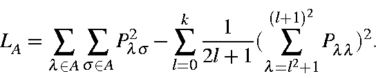
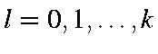
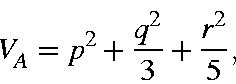
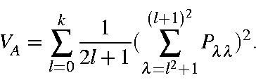
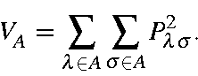

Next: Bond order Up: Bond Orders Previous: Atomic bond index


Next: Bond order Up: Bond Orders Previous: Atomic bond index
A measure of the number of lone-pairs on an atom.

Typical numbers of lone-pairs are: 0 in, for example, hydrogen and carbon, 1 for nitrogen in amines, and 2 in oxygen.
To see how this expression is derived, consider an atom having valence orbitals defined by angular quantum numbers . For H, k=0, for all other elements, k=1. In order to have spherical symmetry, all orbitals in any shell must be equally occupied. In addition, since the product of any two different atomic orbitals is non-spherical, all off-diagonal density matrix terms on any one atom must be zero.
For a spherical atom having the atomic populations sppqdr, the valency would be:

or, in general:

Since, in general, atoms are non-spherical, then:

The difference between the last two equations is a measure of how unspherical the atom is.


Next: Bond order Up: Bond Orders Previous: Atomic bond index